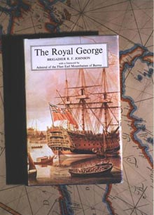
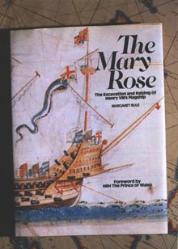

|
|
SALVAGE OPERATIONS - JOHN BEVAN
Having invented what they called a safe and effectual means of working underwater the two brothers, John and Charles Deane, began their commercial diving careers in 1829.
JOHN DEANE (1800-1884)

At this time they went to the Isle of Wight to rescue the cargo of an East India man, called the Carnbria Castle. Whilst in the area they discovered the whereabouts of another wreck, called the Royal George. This particular ship was sunk in the prime anchorage of the Royal Navy in the Solent and was causing considerable embarrassment to the anchoring of the other warships. There was considerable interest therefore in the possibility of removing the wreck. John and Charles Deane commenced operations on the Royal George in 1832 and they continued their operations through 1834/5 and 6.One of the most wonderful artefacts that John Deane brought to the surface was this flintlock pistol. This and many other relics were very carefully recorded by and painted for John Deane.
Unfortunately the Admiralty decided that the Deane brothers did not really have the resources for completely removing the wreck, so in 1839 they gave the job to Colonel Pasley of the Royal Engineers.
Much of the equipment, that is diving equipment, used on this salvage work consisted of both Deane’s open diving dress and the new Augustus Siebe closed diving dress. As a result of this operation it may be said that Augustus Siebe came to fame and his closed diving dress became adopted by the Royal Engineers and later by the Royal Navy.

Whilst working on the wreck of the Royal George in the Solent, John Deane was told by some local fishermen that another wreck was fouling their nets. John Deane took the opportunity to investigate this foul and discovered that it was the wreck of the Mary Rose.What he first saw were wooden spars protruding from the sea bed. On closer inspection, amongst other items, he found a beautiful bronze cannon.
Colonel Pasley’s diary notes for 22nd August, 1840 that he visited John Deane to find that he had brought up a very curious brass sheave. This brass sheave would have formed part of the rigging of that fine ship, the one-time flagship of the Royal Navy.
Augustus Siebe then became quite a wealthy manufacturer as a result of his enterprise in the diving equipment business. He owed much to the Royal George and because his backgound was as a jeweler and chaser one of the things he produced to commemorate this event was this special chalice. The wood has come from the wreck of the Royal George and this fine casting and chasing was hand done by Augustus Siebe himself.
After his death in 1872 Augustus Siebe left his company to his son Henry Siebe and his son in law William Gorman and the company was renamed Siebe Gorman & Company.
WILLIAM GORMAN (1834-1904)
 The
company then diversified its activities and as well as the manufacture of diving
equipment they also kept a whole team of operational divers. Perhaps the most
famous of these divers was Alexander Lambert, at the time the chief diver. His
greatest exploit was to go to the Grand Canary Islands and dive on the wreck
of SS. Alphonso 12.
The
company then diversified its activities and as well as the manufacture of diving
equipment they also kept a whole team of operational divers. Perhaps the most
famous of these divers was Alexander Lambert, at the time the chief diver. His
greatest exploit was to go to the Grand Canary Islands and dive on the wreck
of SS. Alphonso 12.
1885
Whilst working on this wreck in a depth of 160 feet of water Alexander Lambert recovered seven boxes of gold: this being one of them. Each box contained £10,000 worth of gold. So in all Alexander Lambert recovered £70,000 pounds worth in gold for Siebe Gorman & Company and the underwriters of the wreck.
|
|